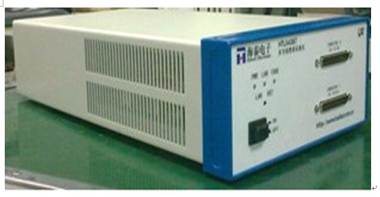

多功能数据采集仪

产品简介
□产品型号：HTLX4387
□产品名称：多功能数据采集仪
□HTLX4387多功能数据采集仪（以下简称HTLX4387），具有模拟量采集、模拟量输出、数字量输入输出、定时计数器和可编程功能接口功能
功能特性
□模拟输入:HTLX4387具有四通道并行DA输出功能，四个DA通道共用输出数据缓存队列，它们能实现模拟波形输出功能
□数字输入输出:HTLX4387的Port0为8个双向数字IO口，另外还有16个PFI口可作为通用的静态数字IO使用
□各数字端口方向和功能单独可控，可设置为静态数字输入或输出
□HTLX4387支持软件触发、数字触发和模拟触发。对于数字触发，必须选择适当的触发源和触发沿，触发源可以是PFI、RTSI、或 PXI_STAR信号，触发沿为上升沿
应用行业
□ 设计和调试；
□ 教育和培训；
□ 制造测试和质量控制；
□ 服务和维修